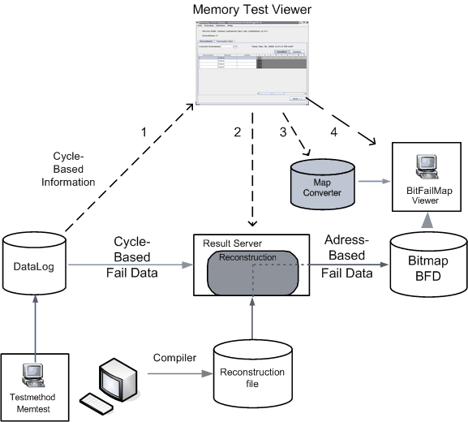

Overview of the Memory Test Viewer
The Memory Test Viewer (see illustration below) allows you to pick cycle-based result data from the data log (1) and transform it to address-based data format (2). The address-based data is then converted (3) and the Bit Fail Map Viewer (BFM Viewer) finally is called (4) to display the bit fail map.

The Memory Test Viewer calls the Result Server which reconstructs the selected cycle-based data, using the Reconstruction File, into address-based data. The BFM Viewer uses the Map Converter to rearrange Bitmap data into a user friendly format. This way, a selected portion only of the data in the data log file can be analyzed comfortably with the BFM Viewer.